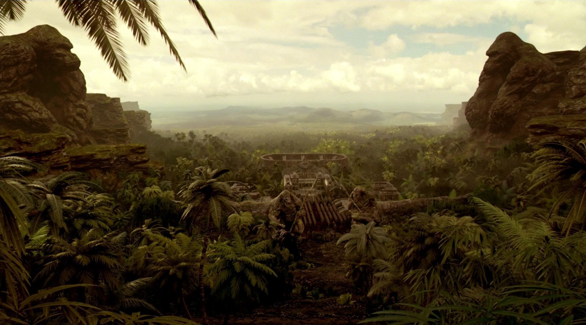

Flash S02|E07 Gorilla Warfare
The thing I enjoy most about this season of The Flash is that the writers aren’t wasting time before giving fans what they crave. Six episodes in, we’ve already gotten a hefty dose of Earth-2 goodness and one really great, Zoom-centric episode. And thanks to tonight’s episode, we got another dose of Gorilla Grodd. While it’s disappointing that the show hasn’t embraced Grodd’s full potential as a villain yet, “Gorilla Warfare” served as a nice appetizer until that time finally comes.
As with Grodd’s previous appearance in Season 1’s “Grodd Lives,” the villain is impressive even on a purely technical level. You don’t expect to see a fully CG character with this amount of detail and craft on a network TV show. More impressive than Grodd’s hulking size or intricately rendered fur, though, is the fact that he displays such a clear range of emotion. Grodd’s pain and loneliness is palpable thanks to his facial expressions and body language. That last, sad glimpse he gave to Caitlin and Barry before being sucked through the portal really said it all. “Grodd Lives” wound up being nominated for an Emmy for in the “Outstanding Visual Effects” category, and I wouldn’t be surprised if this episode follows suit. Surely some episode from this season will earn a nod, in any case.
It was a huge treat to actually see Gorilla City in the final moments. It’s just one more in a long line of DC trappings I never expected to see on live-action TV but am thrilled to be proven wrong. Next time Grodd appears, I’m hoping we can look forward to the debut of King Solivar and the resulting gorilla civil war between Solivar and Grodd. With Wells’ allusion to Atlantis recently, it seems like this show is going to use Earth-2 as a breeding ground for all the wacky hidden cities and other concepts too esoteric for Earth-1 to contain.

Wells put himself on the line this week in order to rescue Caitlin. Simply seeing Wells wearing the Reverse-Flash costume was chilling, especially when that shuddering speed sound effect kicked in. What made Cavanagh’s performance so great, though, was the fact that he was playing one version of his character trying to imitate another version. I’ve praised Cavanagh in the past for playing Earth-2 Wells so different from the Earth-1 version. Never has that divide been more apparent than now, as Wells tried to assume the intense calm and charisma of his other self. It was a very nuanced performance. Interestingly, the Wells/Grodd scene makes you wonder just how much this Wells knows about his counterpart and what he was up to with Grodd. It seems like he still has a dark secret or three he’s keeping bottled up.
As per usual, there was a fair amount of romantic intrigue at wok to balance out the drama and superhero antics. Cisco took the lion’s share of that burden this week as he courted Kendra and inadvertently discovered her secret past as a winged avenger. Whether Cisco was seeing into Kendra’s memories or the show is going to delve into the reincarnation aspect of the Hawkman/Hawkgirl mythos, it wasn’t clear. But with both of those characters appearing in the upcoming Flash/Arrow crossover, we’ll probably learn soon enough. Hawkgirl teases aside, the Cisco/Kendra subplot was entertaining simply on a romantic comedy level. Cisco was usual charming, goofy self throughout the evening. He deserves a little happiness at this point, even i it probably won’t last.
Next weeks episode preview: